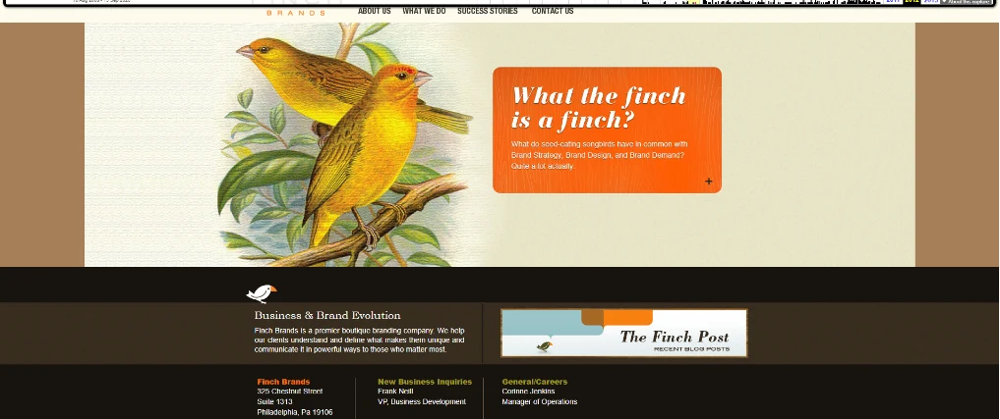
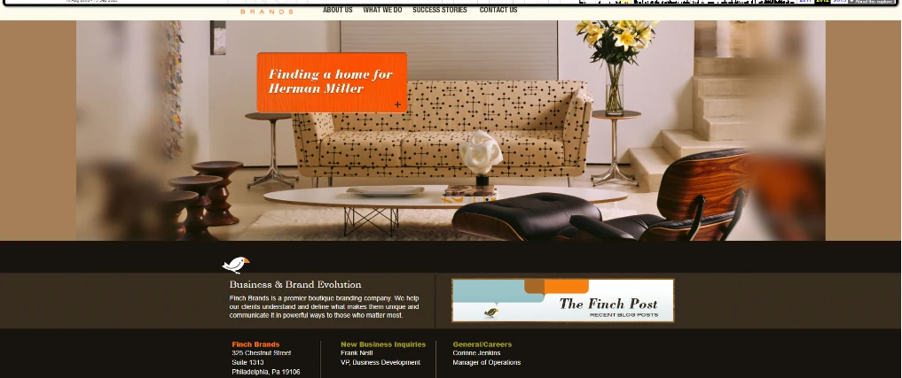
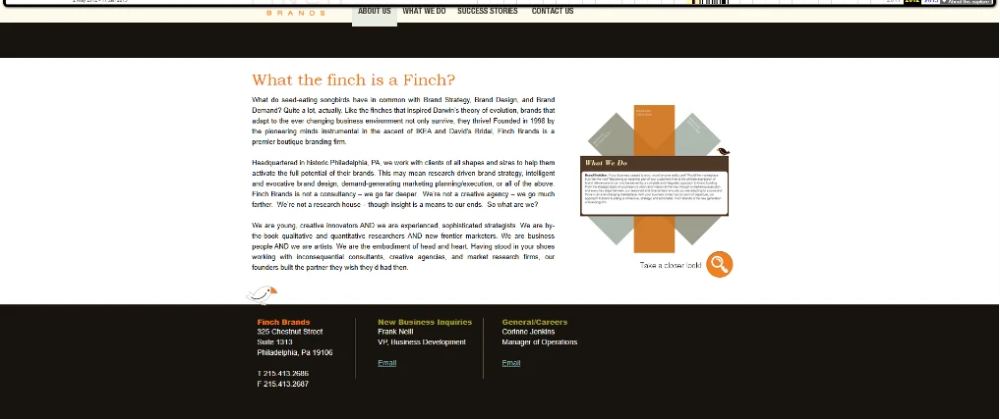
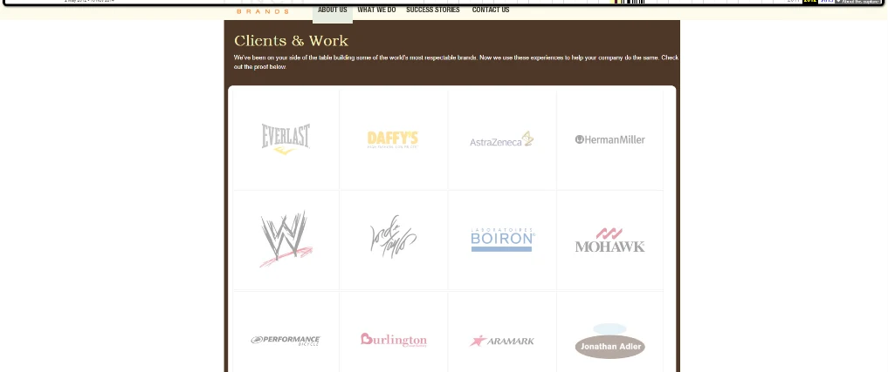
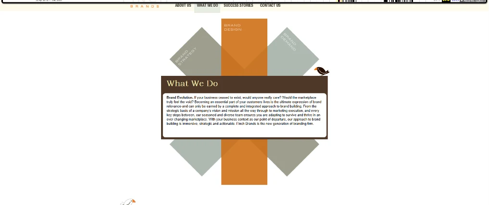
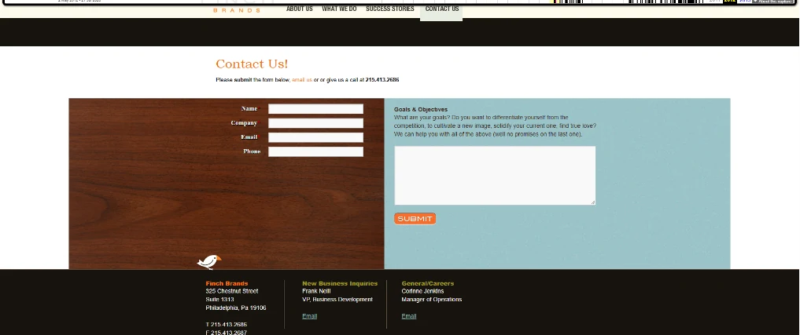

CASE STUDY / CONSUMER BRAND
Everlast: Fighting in a New Century
A century-old boxing brand expands its story into athletic lifestyle, with the agency's strategy and business outcomes presented in a focused narrative.
Read case study ↗How I diagnosed opportunities in Finch Brands' external communications, led a strategic website refresh, and built an ongoing editorial program around the agency's distinctive voice.
Finch Brands helped organizations find their positioning, express their identities, and connect with customers. Its own external communications, however, presented opportunities to better demonstrate that expertise and convert interest into conversations.
As Director of Brand Management, I began with a comprehensive audit rather than a cosmetic redesign. I evaluated the website alongside the firm's blog, newsletter, social channels, business development emails, and direct mail to understand how those touchpoints worked together.

My November 2011 external communications audit combined competitive benchmarking, website analysis, readability testing, content review, and recommendations for usability, search visibility, lead capture, and editorial consistency.
These are baseline findings from the 2011 audit, not post-launch performance results. The grading and indexing measures reflect the tools and conditions of that period.
That recommendation became a guiding idea: let the agency's work provide the proof. I also called for a clearer About section, more intuitive contact options, stronger integration of blog content, and more prominent social connections. The goal was not merely to attract visitors but to give them compelling reasons to explore, trust, and contact the firm.
I managed the website refresh from planning through execution. I determined which sections the site needed, shaped its information architecture, worked directly with the developer on layout and implementation, and wrote the body copy throughout.
The challenge was to connect the agency’s creative assets, campaign concepts, and client work into a coherent narrative, making the experience feel unified, informative, and unmistakably Finch.





I wrote or adapted six case studies for the refreshed website, translating agency engagements into concise Challenge, Solution, and Results narratives. Some were built from earlier material; others were written from scratch. In each case, I shaped the story for the new website and its prospective-client audience.
A century-old boxing brand expands its story into athletic lifestyle, with the agency's strategy and business outcomes presented in a focused narrative.
Read case study ↗A complex foreign-exchange business becomes a clear story about global positioning, identity, and communications across eight languages.
Read case study ↗A security-services provider's repositioning is told through an integrated set of customer-facing and business-facing communications.
Read case study ↗I also wrote or adapted website case studies for China Grill, WWE, and Daffy's, bringing hospitality, entertainment, and retail assignments into the same editorial framework.
Beyond the website, I wrote the firm's thought leadership articles for The Finch Post and all of its Facebook, Twitter, and LinkedIn content. That work required a consistent personality across different formats, while moving comfortably from business analysis to cultural observation, humor, and client news.
On April 12, 2012, I published Practicing What We Preach, connecting the website relaunch to Finch's belief that brands must evolve to remain relevant. The article is a useful marker of the strategy becoming a live experience.
Uses the contrast between Kodak and Instagram to make the stakes of relevance clear.
Read article ↗Finds a surprising connection between evolutionary biology and BlackBerry's return to its business roots.
Read article ↗Questions what click-through rates really prove, and distinguishes short-term response from long-term brand value.
Read article ↗The relaunch announcement that ties the firm's new digital presence directly to its brand philosophy.
Read article ↗The result was a refreshed website and an ongoing stream of original editorial content built around the same strategic priorities: make the firm's expertise easy to understand, show its work, maintain a distinctive voice, and give prospective clients clear paths to engage.
For me, the project brought together the parts of brand writing I value most: asking better questions, turning research into direction, collaborating across disciplines, and finding the words that make an organization sound like itself.
← Back to selected work